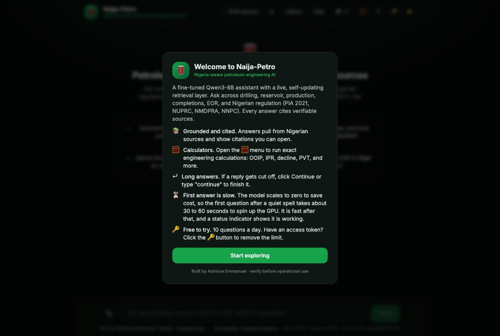

Domain-specific LLM
Naija-Petro AI
A language model fine-tuned on 33,000+ petroleum-engineering instruction pairs.
Explore project
Domain-specific LLM
Naija-Petro AI
Fine-tuned Qwen3 32B and 8B models on 33,000+ petroleum-engineering instruction-response pairs using QLoRA with Unsloth; achieved +0.77 LLM-as-Judge improvement over the base model across six subdisciplines.
Built a 20.5M-word data pipeline from 66,905 text chunks across seven open-access sources plus synthetic instruction generation, then deployed a dynamic RAG application using Modal, Supabase, Python and JavaScript. Synthetic instruction generation used NVIDIA Data Designer; models are open-sourced on Hugging Face.